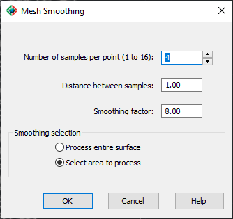
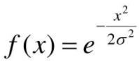

|
|
Toolbar:
Menu: CAD-Earth > Mesh > Mesh Explorer. Mesh Explorer node:
Context Menu: Triangulation > Smooth mesh
|
|
|
Command line: CE_MESHEXPLORER
If you select an area to process:
Select first point [or ENTER to exit]: Select next point or [Undo]: Select next point or [Undo]:
Command line output example:
(23516)points processed. Average elevation difference = 0.002, Mininum elevation difference = -0.035, Maximum elevation difference = 0.034
CAD-Earth version: Premium. |
(1).png)
.png)
.png)
(1).png)
Command description:
Smooth the terrain mesh by sampling neighboring grid points applying a weighted average of the sampled grid points. The weighted average of the sampled points elevations becomes the elevation of the point in question. The weights for the sample points are derived with a 1D Gaussian filter function in both X and Y directions.

Dialog box for terrain mesh smoothing.

Gaussian 1D filtering function
Dialog box settings:
ØNumber of samples per point (1 to 16). The number of neighboring points analyzed for each point in the X and Y direction.
ØDistance between samples. The separation distance between sampled points.
ØSmoothing factor (1 to 16). The sigma value for the filter function. Higher values produce smoother meshes.
Tips:
•Use this command to even a surface and get smooth contour lines.
•Higher smoothing factor values an large distances between samples can cause small ridges and trenches to disappear.
Copyright © 2023 Arqcom Software
Google Earth© is a registered trademark of Google inc. All other trademarks are the property of their respective owners.